流体力学
流体
基礎方程式
登場人物
- 速度 \(u_i\)
- 変形速度 \(d_{ij} := \pd{x_j} u_i\) → 歪み速度 \(S_{ij}:=d_{(ij)}\) + 回転速度 \(\Omega_{ij}:=d_{[ij]}\)
- 渦度 \(\omega_k := \epsilon_{ijk}d_{ij}\)
- 応力 \(\sigma_{ij}\)
- 密度 \(\rho\)
- 圧力 \(p\)
- 外力 \(g_i\)
質量保存則（連続の式）
\[ \pd{}{t}\rho+\pd{}{x_i}(\rho u_i)=0 \]
運動量保存則（運動方程式）
\[ \pd{}{t}(\rho u_i) + \pd{}{x_j}(\rho u_i u_j)=\pd{}{x_i}\sigma_{ii}+\rho g_i \]
構成則
構成方程式の一般式
\[ \sigma_{ij}=\mathcal{F}(d_{kl}) \]
- 静水圧
\[ \sigma_{ij} = -p\delta_{ij} \]
- 変形速度テンソル（対称・等方的）
\[ \sigma_{ij} = C_{ijkl}d_{kl} \]
\[ C_{ijkl} = \lambda\delta_{ij}\delta_{kl} + \mu\delta_{ik}\delta_{jl} + \nu\lambda_{il}\lambda_{jk} \]
ニュートン流体の構成方程式
\[ \sigma_{ij} = \left( -p + \frac{2}{3} \mu S_{kk} \right) \delta_{ij} + 2 \mu S_{ij} \]
ナビエストークス方程式
\[ \pd{}{t}(\rho u_i)+\pd{}{x_j}(\rho u_iu_j)=-\pd{}{x_i}\left(p+\frac{2}{3}\mu\partial_ku_k\right)+\mu\pd{}{x_j}\left(\pd{}{x_j}u_i+\pd{}{x_i}u_j\right)+\rho g_i \]
非圧縮
\[ \rho \left( \pd{}{t} u_i + u_j \pd{}{x_j} u_i \right) = -\pd{}{x_i} p + \mu \pd{}{x_j} \pd{}{x_j} u_i + \rho g_i \]
無次元化 \(D,V,L\)
\[ \rho \pd{}{t} u_i + \rho u_j \pd{}{x_j} u_i = -\pd{}{x_i} p + \frac{\mu}{DVL} \pd{}{x_j} \pd{}{x_j} u_i + \rho g_i \]
レイノルズ数\(Re:=\frac{\rho V L}{\mu}\)と外力場\(g_i\)が同じなら、等価な微分方程式となり、相似な流れになる．
π 定理
法則が\(n\)個の変数\((q_1,q_2,,,q_n)\)で表現されていて，変数が\(k\)個の独立な基本単位で表されるとき，
| \(e_1\) | … | \(e_k\) | |
|---|---|---|---|
| \(q_1\) | |||
| : | \(M\) | ||
| \(q_n\) |
\(k=\mathrm{rank}\,M\)
無次元数の数 \(=\mathrm{null}\,M\)
二次元
\[ \begin{aligned} \pd{u}{x} + \pd{v}{y} &= 0 \\ \rho \left( \pd{u}{t} + u \pd{u}{x} + v \pd{u}{y} \right) &= -\pd{p}{x} + \mu \left( \pdd{u}{x} + \pdd{u}{y} \right) + \rho g_x \\ \rho \left( \pd{v}{t} + u \pd{v}{x} + v \pd{v}{y} \right) &= -\pd{p}{y} + \mu \left( \pdd{v}{x} + \pdd{v}{y} \right) + \rho g_y \end{aligned} \]
円筒座標 \((r,\theta,z)\)
\[ \begin{aligned} \frac{1}{r} \pd{r}(ru_r) + \frac{1}{r} \pd{}{\theta} u_\theta + \pd{}{z} u_z &= 0 \\ \rho \left( \pd{u_r}{t} + u_r \pd{u_r}{r} + \frac{u_\theta}{r} \pd{u_r}{\theta} - \frac{u_\theta^2}{r} + u_z \pd{u_r}{z} \right) &= -\pd{p}{r} + \mu \left[ \pd{}{r} \left(\frac{1}{r}\pd{r}(ru_r)\right) + \frac{1}{r^2}\pdd{u_r}{\theta} - \frac{2}{r^2} \pd{u_\theta}{\theta} + \pdd{u_r}{z} \right] + \rho g_r \\ \rho\left( \pd{u_\theta}{t} + u_r \pd{u_\theta}{r} + \frac{u_\theta}{r} \pd{u_\theta}{\theta} + \frac{u_ru_\theta}{r} + u_z \pd{u_\theta}{z} \right) &= -\frac{1}{r}\pd{p}{\theta} + \mu \left[ \pd{}{r} \left( \frac{1}{r} \pd{r}(ru_\theta)\right) + \frac{1}{r^2} \pdd{u_\theta}{\theta} + \frac{2}{r^2} \pd{u_r}{\theta} + \pdd{u_\theta}{z} \right] + \rho g_\theta \\ \rho\left( \pd{u_z}{t} + u_r \pd{u_z}{r} + \frac{u_\theta}{r} \pd{u_z}{\theta} + u_z\pd{u_z}{z} \right) &= -\pd{p}{z} + \mu \left[ \frac{1}{r} \pd{}{r} \left(r\pd{r}u_z\right) + \frac{1}{r^2} \pdd{u_z}{\theta} + \pdd{u_z}{z} \right] + \rho g_z \end{aligned} \]
圧力ポアソン方程式
非圧縮で外力のないナビエストークス方程式
\[ \rho\left(\pd{u_i}{t} + u_j\pd{u_i}{x_j}\right) = -\pd{p}{x_i} + \mu \pdd{u_i}{x_j} \]
の両辺に \(\pd{}{x_i}\) をかけて，連続の式 \(\pd{u_i}{x_i}=0\) を用いると
\[ \rho \pd{u_j}{x_i}\pd{u_i}{x_j} = -\pdd{p}{x_i} \]
円管内層流（ポアズイユ流れ）

半径 \(R\) の円管
軸対称 \(\partial_\theta=0, u_\theta=0\), 発達流 \(\partial_z=0\), 定常 \(\pd{t}=0\), 円管表面で \(u=0\)
NS 方程式に条件を適用して，
\[ \d{p}{z} = \mu\frac{1}{r} \d{}{r} \left( r \d{u_z}{r} \right) \]
これを解く
\[ \begin{aligned} \d{}{r} \left( r \d{u_z}{r} \right) &= \frac{1}{\mu} \d{p}{z} r \\ r \d{u_z}{r} &= \frac{1}{2\mu} \d{p}{z} r^2 + C_1 \\ \d{u_z}{r} &= \frac{1}{2\mu} \d{p}{z} r + C_1 r^{-1} \\ u_z &= \frac{1}{4\mu} \d{p}{z} r^2 + C_1 \ln r + C_2 \\ \end{aligned} \]
\(u_x(r)\) は有限なので \(C_1=0\) ，また円管表面で \(u_z(R)=0\) より
\[ u_z(r) = \frac{1}{4\mu} \left(-\d{p}{z}\right) (R^2-r^2) \]
中心流速は
\[ u_0 = u(0) = \frac{1}{4\mu} \left(-\d{p}{z}\right) R^2 \]
流量は
\[ Q = \int_0^R 2 \pi r u(r) dr = \frac{\pi}{8\mu} \left(-\d{p}{z}\right) R^4 \]
平均流速は
\[ U = \frac{Q}{\pi R^2} = \frac{u_0}{2} \]
表面の摩擦応力は
\[ \tau = \frac{1}{2} \left(-\d{p}{z}\right) R \]
円管の圧力損失は
\[ \Delta p = \left(-\d{p}{z}\right) L = \frac{8 \mu L}{R^2} U \]
血管の分岐（Murray の法則）
評価関数を
\[ J = Q \Delta P + K \frac{\pi d^2}{4} L \]
熱伝達
平行平板

間隔 \(H\), すべり速度 \(U\)
発達流，定常
\[ 0 = - \d{p}{x} + \mu \dd{u}{y} \]
一般解は
\[ u(y) = - \frac{1}{2\mu} \left(-\d{p}{x}\right) y^2 + C_1 y + C_2 \]
底板は固定 \(u(0)=0\)， 上板は速度 \(U\) ですべっているので \(u(H)=U\)
\[ u(y) = - \frac{1}{2\mu} \left(-\d{p}{x}\right) y(y-H) + \frac{U}{H} y \]
穴あき平板

底板平板から一定の湧き出し \(V_0\) ，上板から同じ吸い込みがあるとき，
\[ \rho V_0 \d{u}{y} = - \d{p}{x} + \mu \dd{u}{y} \]
\(\alpha:=-\frac{\rho V_0}{\mu}, \beta:=-\frac{1}{\mu}\d{p}{x}\) とすると，
\[ \dd{u}{y} + \alpha \d{u}{y} + \beta = 0 \]
一般解は
\[ u(y) = C_1 \exp(-\alpha y) + C_2 - \frac{\beta}{\alpha}y \]
境界条件 \(u(0)=0\) \(u(H)=U\) より
\[ u(y) = \left( U + \frac{\beta}{\alpha} H \right) \frac{\exp(-\alpha y)-1}{\exp(-\alpha H)-1} - \frac{\beta}{\alpha}y \]
\[ u(y) = \left( U + \frac{1}{\rho V_0} \d{p}{x} H \right) \frac{\exp\left(\frac{\rho V_0}{\mu} y\right)-1}{\exp\left(\frac{\rho V_0}{\mu} H\right)-1} - \frac{1}{\rho V_0} \d{p}{x} y \]
同軸二重円筒
境界層

非定常
滑らかな入り口では一様な速度分布になる．
粘性の影響で徐々に壁面から運動量が伝わる．（← 発達）
\[ \pd{t} u + u \partial_x u + v \partial_y u = - \frac{1}{\rho} \partial_x p + \mu ( \partial_x^2u + \partial_y^2u )\\ \partial_x u + \partial_y v = 0 \]
条件
\[ \begin{aligned} u(x,y,0)&=0\\ u(x,0,t)&=U_0 (t>0)\\ u(x,\infty,t)&=0\\ \partial_x u &= 0\\ \partial_x p &= 0 \end{aligned} \]
解
\[ \pd{t}u=\mu\partial_y^2u \]
境界層
\[ \delta(t)=\sqrt{\mu t} \]
流体の運動学
完全流体の支配方程式
非粘性の流体（\(\mathrm{Re}\rightarrow\infty\)）
連続の式
\[ \pd{\rho}{t} + \pd{x_i}(\rho u_i) = 0 \]
オイラー方程式（完全流体の運動方程式）
\[ \pd{u_i}{t} + u_j \pd{u_i}{x_j} = -\frac{1}{\rho} \pd{p_i}{x_i} + g \]
断熱方程式 \[ \pd{s}{t} + u_j \pd{s}{x_j} = 0 \]
渦度方程式
\[ \d{\omega}{t} = \pd{\omega_i}{t} + u_j\pd{\omega_i}{x_j} = \omega_j \pd{u_i}{x_j} + \nu \pdd{\omega_i}{x_j} \]
ラグランジュの渦定理
ポテンシャル流
\[ \nabla\times(\nabla\Phi)=0 \]
渦無し流れにはポテンシャル \(\Phi\) が定義できて \(u=\nabla\Phi\) となる．
連続の式より，
\[ \nabla\cdot u = \nabla\cdot(\nabla\Phi) = \nabla^2 \Phi = 0 \]
速度ポテンシャルはラプラス方程式の解
圧力方程式（ベルヌイの定理）
\[ \frac{p}{\rho} + \frac{1}{2} u^2 + \pd{\Phi}{t} = F(t) \]
二次元ポテンシャル流
流れ関数
\[ u=\pd{\Psi}{y} \quad v=-\pd{\Psi}{x} \]
流れ関数もラプラス方程式の解
複素ポテンシャル
\[ f=\Phi+i\Psi \]
複素速度
\[ w = \d{f}{z} = u - iv \]
\[ u=\mathrm{Re}\d{f}{z} \quad v=-\mathrm{Im}\d{f}{z} \]
ポテンシャルの例
直角
\[ \Psi (x,y) = axy \]
\[ u = \pd{\Psi}{y} = ax \quad v = -\pd{\Psi}{x} = -ay \]
\[ q = \sqrt{u^2+v^2} = a \sqrt{x^2+y^2} \]
\[ w = \pd{v}{x} - \pd{u}{y} = 0 \]
\[ \Phi = \frac{a}{2} (x^2-y^2) + C \]
強制渦
\[ \Psi (x,y) = -a(x^2+y^2) \]
\[ u = \pd{\Psi}{y} = -2ay \quad v = -\pd{\Psi}{x} = 2ax \]
\[ q = \sqrt{u^2+v^2} = 2a \sqrt{x^2+y^2} \]
\[ w = \pd{v}{x} - \pd{u}{y} = 4a \]
\[ \Phi = a \ln \sqrt{x^2+y^2} \]
一様流
\[ f = U e^{-i\alpha} z \]
\[ \d{f}{z} = U e^{-i\alpha} \]
湧き出し・吸い込み
\[ f = m \ln z = m \ln (re^{i\theta}) = m \ln r + im\theta \quad \Phi = m \ln r \quad \Psi = m \theta \]
\[ u_r = \frac{m}{r} \quad u_\theta = 0 \]
渦糸
\[ f = -i \kappa \ln z \]
角
\[ f = C z^n \]
\(\pi/n\) のコーナーを回る流れ
二重湧き出し
\[ f = m \ln(z-a) - m \ln(z+a) = m \ln\frac{z-a}{z+a} \]
二点 \(a,-a\) を近づける（\(a \rightarrow 0\)）（\(2ma \rightarrow \mu\)）
\[ f = - \frac{\mu}{z} \quad \Phi = -\frac{\mu}{r}\cos\theta \quad \Psi = \frac{\mu}{r}\sin\theta \]
円筒まわり
\[ f = U \left( z + \frac{R^2}{z} \right) \quad \Phi = U \left( r + \frac{R^2}{r} \right) \cos\theta \quad \Psi = U \left( r - \frac{R^2}{r} \right) \sin\theta \]
\[ u_r = \pd{\Phi}{r} = U \left( 1 - \frac{R^2}{r^2} \right) \cos\theta \quad u_\theta = \frac{1}{r}\pd{\Phi}{\theta} = -U \left( 1 + \frac{R^2}{r^2} \right) \sin\theta \]
円筒表面 \(r=R\) では
\[ \Phi = 2U\cos\theta \quad \Psi = 0 \quad u_r = 0 \quad u_\theta = -2U\sin\theta \]
半径方向の流速がない
遠方 \(r = \infty\) では
\[ u_r = U\cos\theta \quad u_\theta = -U\sin\theta \]
\[ u_x = -u_\theta \sin\theta + u_r \cos\theta = = U \]
一般の複素ポテンシャル
三次元ポテンシャル流
四元数に拡張する
\[ \begin{alignedat}{5} u_1 & = & \Im_i \pd{f_0}{x} \\ u_2 & = & \Im_j \pd{f_0}{y} \\ u_3 & = & \Im_k \pd{f_0}{z} \end{alignedat} \]
となるような関数 \(f_0(w+xi+yj+zk)\) が四元数上で正則となるように虚部 \(f_1,f_2,f_3\) を定める
\[ \begin{alignedat}{5} u_1 & = & \pd{f_0}{x} & = & -\pd{f_1}{w} & = & \pd{f_2}{z} & = & -\pd{f_3}{y} \\ u_2 & = & \pd{f_0}{y} & = & -\pd{f_1}{z} & = & -\pd{f_2}{w} & = & \pd{f_3}{x} \\ u_3 & = & \pd{f_0}{z} & = & \pd{f_1}{y} & = & -\pd{f_2}{x} & = & -\pd{f_3}{w} \end{alignedat} \]
とすると四元流速 \(u = u_1i+u_2j+u_3k\) は
\[ u = \pd{w}f_0 \]
\[ (\nabla f_i) \cdot (\nabla f_j) = \delta_{ij} \]
一様流
\[ f = Az \]
\[ u = \d{f}{z} = A \]
?
\[ f = Az^{-1} \]
\[ u = \d{f}{z} = -Az^{-2} \]
湧き出し・吸い込み
\[ f = A \ln z \]
\[ u = \d{f}{z} = A z^{-1} \]
球まわり
\[ f = U ( z + R^2 z^{-1} ) \]
\[ u = \pd{f}{z} = U ( 1 - R^2 z^{-2} ) \]
\[ uz = U ( z - R^2 z^{-1} ) \]
円球面 \(|z|=R\) 上では \(z = R (xi + yj + zk)\) として，
\[ uz = U ( z - z^* ) = 0 \]
つまり流速が半径と垂直になる
渦の運動
- 速度場 \(u\)
- 速度勾配テンソル \(d_{ij} := \pd{x_j}u_i\)
- 変形速度テンソル \(s_{ij} := d_{(ij)}\)
- 軸変形
- 対称テンソルなので主軸が存在する
- 体積変化は \((1+\lambda_1)(1+\lambda_2)(1+\lambda_3) \sim 1 + \lambda_1+\lambda_2+\lambda_3 = 1 + \Lambda\)
- 非圧縮の場合，トレース \(\Lambda=0\)
- ずり変形
- 非対格成分はひし形状の変形を表す
- 体積は保存
- 軸変形
- 渦度 \(\omega_k := \epsilon_{ijk}d_{ij}\)
- 速度勾配テンソルの反対称成分 \(\Omega_{ij}:=d_{[ij]}=\epsilon_{ijk}\omega_k\)
- 回転を表すソレノイダル場（ \(\partial_k\omega_k=0\)）
- 渦線
- 渦度ベクトルを繋いだ線
- 渦線の接ベクトルが渦度ベクトルと一致する
- \(\frac{dx_i}{\omega_i}=\mathrm{const}\)
- 渦菅
- ある閉曲線を通過する渦線のなす閉曲面
- 渦菅表面から渦度の出入りはない（渦菅表面の法線ベクトルと渦度ベクトルは直交）
- 渦糸
- 断面積が微小な渦菅
- 渦菅は曲線とみなせる
- 渦菅内の渦度は一定（Helmholtz の第三法則）
Helmholtz の法則
第一法則（渦度方程式）
第二法則
「渦度は流体粒子に凍結している」
粘性がなく，密度が圧力のみに依存し（バロトロピー流体），体積力が保存力なら，渦線を構成する粒子は常に同じで，渦線と流体は一緒に移動する．
水波
水をポテンシャル流と仮定して扱う
深さ \(h\) 重力場 \(-g\boldsymbol{k}\)
\[ \nabla^2\Phi=0 \]
\[ \pd{\Phi}{t}+\frac{1}{2}(\nabla \Phi)^2 +\frac{P}{\rho}+gz=0 \]
このときに表面の形を表す方程式
\[ z=\zeta(x,t),\quad F(x,t)=0 \]
を求めたい．
表面条件
表面を構成する粒子は表面を漂うと仮定する．つまり，表面の物質微分
\[ \d{F}{t} = \pd{t}F + u \cdot \nabla F = 0 \\ \pd{\zeta}{t}+\nabla\Phi\cdot\nabla\zeta=\pd{\Phi}{z} \]
また，表面の圧力は大気圧なので，圧力をゲージ圧として，
\[ P(x,t)=0\,(F(x,t)=0) \]
表面張力がある場合，圧力が高くなる．表面張力は表面形状に依存する成分と表面張力係数 \(T\) の積になる．
微小変位
表面の形状に依存した複雑な境界条件になるので，波の変位が微小だと仮定して線形化する
\(z\) を微小変位 \(\zeta\) として，
\[ \Phi(x,y,z) \simeq \Phi(x,y,0) + \zeta \pd{z}\Phi(x,y,\zeta) \]
表面形状の条件は
\[ \pd{\zeta}{t}=\pd{\Phi}{z} \]
表面圧力の条件は（表面張力を含む）
\[ \pd{\Phi}{t}+g\zeta=\frac{T}{\rho}\left(\pdd{\zeta}{x}+\pdd{\zeta}{y}\right) \]
2 次元の解
\(y\) 方向を均一として解く
\[ \Phi=-a\frac{\omega \cosh k(z+h)}{k \sinh kh}\cos (kx-\omega t) \]
浅水波 \(kh<<1\) の場合
\[ \Phi = -\frac{a\omega}{k^2h}\cos (kx-\omega t) \]
速度場
\[ u=\frac{a\omega}{kh}\sin(kx-\omega t) \]
深水波 \(kh>>1\) の場合
\[ \Phi = -a\frac{\omega}{k}e^{kz}\cos(kx-\omega t) \]
位相速度
\[ c_p=\sqrt{\frac{g}{k}} \]
群速度
\[ c_g=\frac{1}{2}\sqrt{\frac{g}{k}} \]
KdV 方程式
\[ \pd{u}{t} + \alpha u \pd{u}{x} + \beta \pddd{u}{x} = 0 \]
ソリトン解
\[ u=\frac{c}{2}\sech^2\frac{\sqrt{c}}{2}(x-ct+\delta) \]